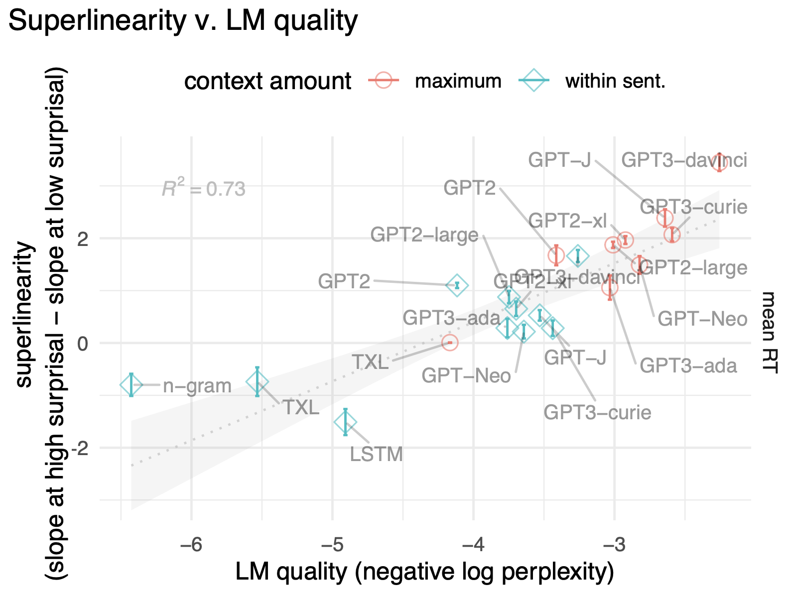
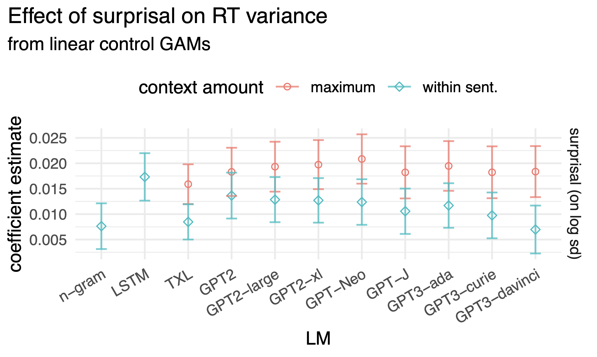

\global\def\I#1{\operatorname{I}(#1)} \global\def\H#1{\operatorname{H}(#1)} \global\def\KL#1#2{\operatorname{D_{KL}}(#1 \| #2)} \global\def\E#1{\operatorname*{\mathbb{E}}[#1]} \global\def\dee{\mathop{\mathrm{d}\!}} \global\def\var#1{\operatorname{var}(#1)} \global\def\fade#1{{\color{gray}{#1}}} \global\def\surp#1{{\operatorname{surp}(#1)}}
11/10/22
Parsing/comprehension can be seen as iterative inference w_{1:n} \mapsto p(z\mid w_{1:n})
incrementally:
p(z \mid w_{1:n}) = \frac{p(w_n \mid z)p(z \mid w_{1:n-1})}{p(w_n|w_{1:n-1})}
Phenomenon
Human processing time increases with surprisal: \surp{w_n} \coloneqq -\log p(w_n|w_{1:n-1})
#steps to integrate w_n cannot depend on probability
(without probabilistic pruning)
remains the case with chunking (Hale 2014; Luong et al. 2015)
Problem
Amount of work algorithm does doesn’t directly depend on the probability of input.
What algorithms do scale in surprisal?
prioritize meanings with higher prior probability p(z\mid w_{1:n-1})
probability the z is successful: \sum_{z} p(w_n \mid z) p(z \mid w_{1:n-1}) = p(w_n \mid w_{1:n-1})
simple guessing (iid) until success. Expected number of samples M:
\E{M} = \frac1p = e^{\surp{w_n}} \qquad \var{M} = \frac{1-p}{p^2} = e^{2\surp{w_n}} - e^{\surp{w_n}} = \mathcal{O}(e^{\surp{w_n}})
guessing without replacement until success
assuming heavy-tailed probabilities
runtime superlinear, variance increasing (no closed form; details)
also, deterministic probability-ordered search
assuming heavy-tailed probabilities
\E{M} = \mathcal{O}(e^{\surp{w_n}})
\longrightarrow expected runtime increases superlinearly with surprisal.
\longrightarrow runtime variance increases with surprisal.
Most algorithms don’t scale in surprisal
Algorithms that do predict:
\longrightarrow re-examine empirical relationship.
want to model
\rightarrow GAMs (in particular, scale-location models, Wood et al. 2016)
psychometric dataset
\longrightarrow Natural Stories (Futrell et al. 2021)
surprisal estimates
\longrightarrow Transformer-based LMs (including GPT-3, Brown et al. 2020)
better LMs \implies more superlinear
better LM \implies more superlinear

variance increases with surprisal

Runtime
Expected runtime (#samples until success, for items with weights \{u_\text{target}, u_1, u_2, \ldots, u_K\}): \E{N_\text{WOR}} = 1 + \sum_i \Pr(i \prec \text{target}) = 1 + \sum_i \frac{u_i}{u_i + u_\text{target}}
Similar calculation for variance in runtime.
\implies runtime increases exponentially with surprisal
\implies runtime variance increases with surprisal
Runtime = number of items with higher probability.
Assume: weights \sim Pareto distribution
Search runtime for items Pareto-distributed weights (unnormalized probabilities)
If item weights have density \operatorname{pdf}(\mathsf{w})= \fade{a}\mathsf{w}^{-(\alpha + 1)} then item surprisal \mathsf{s} = -\log(\mathsf{w}\fade{/Z}) has density: 1
\begin{equation} \operatorname{pdf}(\mathsf{s}) = \fade{\frac{a}{Z^\alpha}}e^{\alpha \;\!\mathsf{s}} \end{equation}
for target item i, the proportion of items with surprisal lower than \surp{i} is
\begin{equation} \Pr(\mathsf{s} < \surp{i}) = \int_0^{\surp{i}} \operatorname{pdf}(\mathsf{s}) \dee{\mathsf{s}} = \fade{\frac{a}{\alpha Z^\alpha}}\fade{(}e^{\alpha \surp{i}} -1\fade{)} \end{equation}
so the total search runtime to find i is \begin{equation} \operatorname{Time}(i) = \fade{K}\fade{(}e^{\alpha\;\!\surp{i}} - 1\fade{)} \end{equation}
\implies search runtime increases exponentially with surprisal
Runtime = number of items with higher probability.
In ACT-R, assume: need odds \sim Pareto (Anderson and Lebiere 1998)
\implies seach runtime increases exponentially with (negative) log-odds.
Search runtime for Pareto-distributed odds
If odds have density \operatorname{pdf}(\mathsf{o})= \fade{a}\mathsf{o}^{-(\alpha + 1)} then log odds \mathsf{r} = \log \mathsf{o} have density
\begin{equation} \operatorname{pdf}(\mathsf{r})= ae^{-\alpha\;\!\mathsf{r}} \end{equation}
can derive relationship between log-odds and search runtime:
\begin{equation} \tag{\fade{\text{ACT-R latency formula}}} \qquad \operatorname{Time}(i) = \fade{K} e^{-\fade{\alpha}\;\!\mathrm{logodds}(i)} \end{equation}
plugging in \text{log-odds}(\cdot) = -\log(e^{\surp{\cdot}}-1), get
\begin{equation} \operatorname{Time}(l) = \fade{K} e^{-\fade{\alpha} l} = \fade{K} (e^s-1)^\alpha \end{equation}
\implies search runtime increases exponentially with surprisal